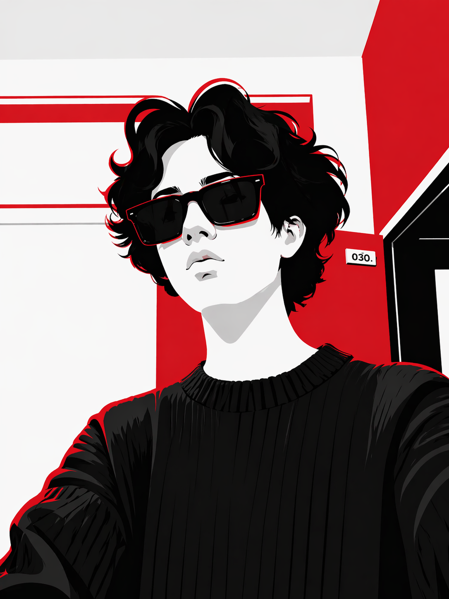

Passionné par les interfaces propres, les expériences élégantes et le code qui prend vie. Actuellement en stage chez Feichter Electronics.
Voir mes projets →
J'ai 20 ans, étudiant en 2ème année de BUT d'informatique à l'IUT de Lannion. Je crée des interfaces où technique et esthétique se complètent.
Ce qui me motive : comprendre comment les choses fonctionnent, les optimiser, expérimenter en continu. Je
cherche une alternance en développement pour septembre 2026 et vise l'ENSSAT pour me spécialiser
davantage.
En dehors du code, je prépare mon CEM en musique bretonne au conservatoire — l'accordéon diatonique m'apporte
rigueur et sens du rythme que j'applique aussi à mes projets.
Je recherche une alternance en développement web ou logiciel pour septembre 2026, en vue d'intégrer l'ENSSAT et me spécialiser davantage en ingénierie logicielle.
Voir mon CV →Participation à des projets concrets dans un environnement professionnel. Développement et intégration de solutions logicielles dans le domaine de l'électronique. Montée en compétences sur les technologies embarquées et les outils métiers.
Formation BUT Informatique avec projets académiques en équipe et en solo : Snake en C, automatisation Docker, BDD relationnelle, site responsive pour les JO 2024.
Je pratique l'accordéon diatonique et prépare mon CEM au conservatoire. La musique bretonne m'apporte rigueur, sens du rythme et la capacité de travailler sur le long terme.
CEM en cours — ConservatoireFan de compétition et de dépassement de soi.J'étais classé #42 mondial sur Brawl Stars sur le brawler Squeak. Le jeu compétitif m'a appris la stratégie, l'analyse rapide et la persévérance.
#42 Mondial — Squeak